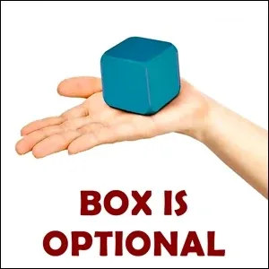
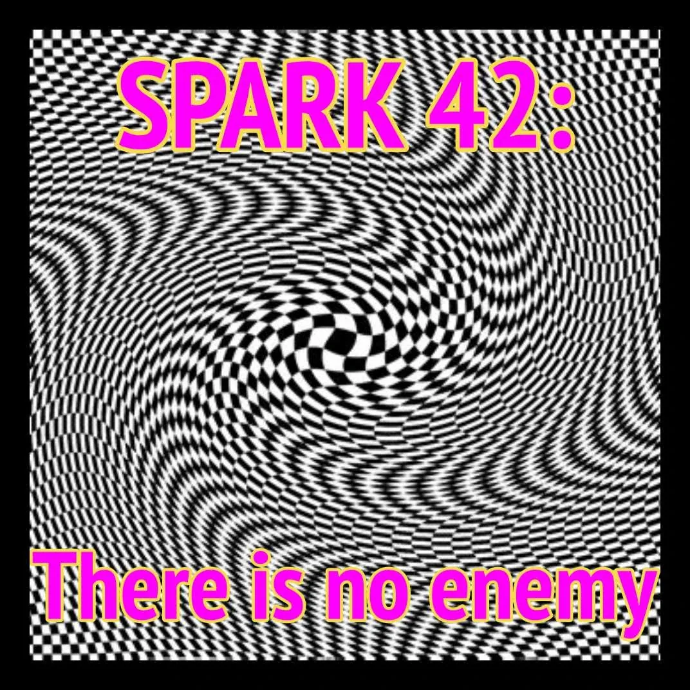

Disidentification on Strikingly
[

](http://boxtechnology.mystrikingly.com/)
I AM NOT MY BOX
Matrix Code DISIDENT 1
Long ago, Descartes said "I think, therefore I am." For centuries, this Thoughtware has permeated modern culture. It's roots are so deep that the construct you probably still unconsciously carry is that "If I think and therefore I am, then if I do not think... I am not." Discovering that existence continues whether you think or not, whether you give credence to your thoughts or not, opens up worlds of experience and possibility.
The Box is the set of Thoughtware that you use. The Box can expand. You can also make the Box optional. This starts with you disidentifying from your thinking.
For this experiment, set aside 30 minutes to go on a walk each day for one week. At the beginning of the walk, take a moment to center, ground, bubble, and experience yourself as a 5-Body Being. As the walk goes, thinking will happen. Notice the moment when you start to identify with your thinking and stop experiencing yourself as a complex, 5-Body Being. In this moment, declare aloud: "I am not my thoughts." Then re-center, re-declare your grounding cord and bubble, and experience yourself anew as a 5-Body Being.
After each walk, write down one or two sentences in your BEEP! Book about what you discovered.
After completing this experiment, please register Matrix Code DISIDENT.01 in your free account at StartOver.xyz. For proof, share one of your discoveries from the week.
This Experiment is worth 1 Matrix Point.
[

](http://5bodies.mystrikingly.com/)
I AM NOT MY BODY
Matrix Code DISIDENT.02
As a baby, your first identification was with your physical body. You learned to react to every itch, ache, tension, pain, or pleasure that you felt. To this day, you still doing that.
But you are not your body. This experiment is about discovering this distinction experientially.
Find an armless, straight back chair to sit in. Set a timer for 30 minutes. Sit yourself upright in the chair, and begin the timer. For the next 30 minutes, no matter what happens in your body, refuse to do anything about it. Refuse to react, refuse to shift, refuse to move. If there is an itch, let it itch. If there is an ache, let it ache. Notice that no matter how intensely a sensation manifests, you do not ever need to do anything about it. When the timer goes off, the experiment is complete. You might spend a few minutes writing in your BEEP! Book about what it was like not to identify or react to what happened in your physical body.
After completing this experiment, please register Matrix Code DISIDENT.02 in your free account at StartOver.xyz. For proof, say which sensation you struggled most to disidentify from.
This Experiment is worth 1 Matrix Point.
[

](http://yourgremlin.mystrikingly.com/)
I AM NOT MY GREMLIN
Matrix Code DISIDENT.03
This experiment is to be done after you have completed a list of 50 Gremlin foods and are already on a Gremlin Diet.
On a day that is not your Gremlin Feeding Day, gather the five foods that you usually feed your Gremlin and place them in front of you. For one hour, engage with each of the foods without actually allowing your Gremlin to eat them. For instance, if one of your foods is chocolate, you might bring the chocolate close to your nose and keep it there, inhaling the sweet fragrance. If one of your foods is YouTube or Netflix, you might navigate to the website on your browser, and slowly peruse the videos that you would definitely watch if it were your Gremlin Feeding Day.
As you do this, notice your Gremlin. Watch as he or she tries to help you justify or compromise just this once having the Gremlin Food on a day that is not Gremlin Day. Also notice that no matter how clear or compelling your Gremlin's insistence is, you do not have to identify with him or her. You can just be there, hearing the insistence, and still choose not to bite the donut or click the video link or read the gossip column.
After completing this experiment, please register Matrix Code DISIDENT.03 in your free account at StartOver.xyz. Your proof: What was your Gremlin's most compelling argument for why you should break your Gremlin Diet?
This Experiment is worth 1 Matrix Point.
[

](http://parts.mystrikingly.com/)
IDENTIFY WHICH 'I' IS SPEAKING
Matrix Code DISIDENT.04
You have multiple "I"s inside you. Each "I" has its own gestures, voice, mannerisms, way of walking, et cetera. For the most part, you pass from one "I" to the next, unaware that the "I" you were a moment ago differs from the "I" you are identified with now. This experiment is about discovering your various "I"s.
Partner up with a fellow experimenter for one hour a week for 4 weeks. During Week 1, Partner A accompanies Partner B in their life and helps them at home, at work, running errands, doing chores, et cetera. Whenever Partner A notices that Partner B has shifted identity, they pause and share that this has happened. Partner B writes down in their BEEP! Book a name for the identity, its characteristics (voice, mannerisms, expression, etc.), and a guess at the purpose of why they chose to bring this identity forward at this time.
During Week 2, roles switch and Partner B accompanies Partner A. During Week 3, roles switch back, and in Week 4, Partner B once again accompanies Partner A.
After 4 weeks, you will have a list of familiar identities that came up in that time and a guess at when and why (the purpose) you choose each identity.
After completing this experiment, please register Matrix Code DISIDENT.04 in your free account at StartOver.xyz. Your proof: Which identity came up most frequently?
This Experiment is worth 1 Matrix Point.
[

](http://8prisons.mystrikingly.com/)
IDENTIFY WITH YOUR MOTHER
Matrix Code DISIDENT.05
At your next Possibility Team, create a stage. During the Possibility Team, you (and each of the other participants, one at a time) will go up on the stage, and for 15 minutes, you identify with your mother. You take on her identity.
People in the audience can ask you questions about your life, decisions you made, regrets, dreams, values you hold dear, loves and losses, things like that. When you respond, you respond as your mother.
As you do this, you notice that much of what you perceive your mother to be identified with you are also identified with...
The next experiment is to do the same with your father.
After completing this experiment, please register Matrix Code DISIDENT.05 in your free account at StartOver.xyz. Your proof: What's something you and more mother both identify with?
This Experiment is worth 1 Matrix Point.
[

](http://asking.mystrikingly.com/)
IDENTIFY WITH BEING A SPACE
Matrix Code DISIDENT.06
This is a stage experiment to be done in a Possibility Team or as a WorkTalk.
One person goes up on the stage. While they are there, the audience is permitted to ask them any question. For example:
- Where does consciousness come from?
- How can I become more present in my life?
- What do the fish feel about climate change?
The experiment for the person on the stage is to be the space through which any identity can emerge to consciously serve a particular purpose. Before the person answers any of the questions, the spaceholder defines the purpose of the space, which could be healing, transformation, evolution, love, clarity, et cetera. This purpose will determine which identities emerge and what they say.
Especially in a possibility team, the audience can give coaching for the person on the stage to experience being identified with being a space.
Do this for about 8 minutes per person, and then the next person of the team goes on stage.
After completing this experiment, please register Matrix Code DISIDENT.06 in your free account at StartOver.xyz. Your proof: Share something your identity said.
This Experiment is worth 1 Matrix Point.
[
](http://possibility.mystrikingly.com/)
DISCOVER THE LIMITATIONS OF YOUR STANDARD IDENTITY
Matrix Code DISIDENT.07
This is an experiment for your Possibility Team.
You sit in a chair in front of 3 or 4 people. The 3 or 4 people give you challenges to do that are incongruent with your standard identity. For example:
- Go on a hike through Nepal for a month.
- Write the declaration of independence for your nanonation.
- Sew a cloth or leather outfit by hand and wear it for 3 months.
- Rebuild your car engine.
- Call your neighbor up and invite them to the park.
After each challenge, speak out your resistances to taking on the challenge. What is scary? What are you unable to do? What makes you reject the challenge? Why is it impossible? Someone else in the group takes your BEEP! Book and writes these down.
These are the defenses and limitations of your standard identity. The objective is to notice how strong and how many limitations you have for doing almost anything other than what you do in your normal, ordinary life.
After completing this experiment, please register Matrix Code DISIDENT.07 in your free account at StartOver.xyz. Your proof: Write 3 of your biggest defenses against doing anything different than what your standard identity allows.
This Experiment is worth 1 Matrix Point.
[
](http://causeadventure.mystrikingly.com/)
IDENTIFY WITH AN ADVENTURER'S PERSONALITY
Matrix Code DISIDENT.08
This experiment is about finding out how an adventurous or discovery- type person sees the world.
Select a living, true adventurer or an adventurous character from a movie or a story, like Adele Blansec, Lara Croft, Maharati, Indiana Jones or Zorro.
Now, inhabit their identity for a month. Wear their clothes, adopt their speech patterns, use their strategy. Find 3 - 5 catchphrases you can use at opportune moments. Become them. Especially take on their worldview. See life through their particular mindset.
Do not explain your identity shift to other people unless they really think you have gone off the edge.
After completing this experiment, please register Matrix Code DISIDENT.08 in your free account at StartOver.xyz. Your proof: What is your favorite catchphrase?
This Experiment is worth 5 Matrix Point.
[

](http://sparks.nextculture.org/res/sparks/Spark-042-en.pdf)
IDENTIFY WITH YOUR ENEMY
Matrix Code DISIDENT.09
This is an experiment to be done with your Possibility Team.
Get into groups of 3. Spend between 6 and 10 minutes individually making lists of all the people who are your enemies. Start in second grade and go all the way up to the present. Remember, your enemies can even include people you never met, such as politicians or classes of people.
Now, in the group of 3 make one person the Possibilibator and the other two people are the coaches. The Possibilitator chooses one enemy from their list, and for the next 5 minutes, they identify with that person completely. They take on their characteristics, their qualities, their Thoughtware, and their insanity. The coaches help the Possibilitator stay in character.
Afterwards, the Possibilitator spends 3 minutes writing down everything they noticed.
The purpose is not to love or understand the enemy. The purpose is to study the enemy, get to know the enemy. It is not about being understanding of the enemy's insanity. Rather, if you cannot be your enemy consciously, then you will be your enemy unconsciously. This exercise breaks you out of your naïveté.
After completing this experiment, please register Matrix Code DISIDENT.09 in your free account at StartOver.xyz. Your proof: Give your enemy's insanity a name.
This Experiment is worth 1 Matrix Point.
[

](http://selfsurgery.mystrikingly.com/)
DEBAPTISE YOURSELF FROM THE RELIGION OF YOU
Matrix Code DISIDENT.10
This experiment begins the moment you notice that you assume that your identity is true, right, the best, or the only identity you could possibly have. This is the religion of You. At some point, you were baptised into this religion. Only you can baptise yourself out of it.
Ask two people to join you as witnesses at a moving body of water (stream, river, ocean, et cetera). Get naked or in a bathing suit. Identify a specific aspect of your identity that you want to debaptise yourself from: Being 'good' (good boy, good student, good teacher, good person), being 'normal,' fitting in, being an American, being a Native American, et cetera.
With the witnesses watching from the shore, walk out into the water, and then go under the water for 15-20 seconds. Allow it to move over you and wash you, clearing off the goop of your conviction, like when Neo emerges from the Matrix covered in pink slime. The water washes all of this away and it sinks to the bottom of the river or ocean to become lunch for snails and crabs.
Return to your witnesses, and let them appreciate you. Make sure they hug you. Be received as the new Being you are, free of your religious snail-food gunk.
After completing this experiment, please register Matrix Code DISIDENT.10 in your free account at StartOver.xyz. Your proof: What color was your snail-food gunk?
This Experiment is worth 1 Matrix Point.
[

](http://noticing.mystrikingly.com/)
DISIDENTIFY FROM YOUR STANDARD NOTICING
Matrix Code DISIDENT.11
This is an experiment for your Possibility Team. It happens in three parts.
For the first part, split into groups of 3. One person is the client, one person is the scribe, one person is the Possibilitator.
The client begins by noticing aloud what they are noticing. They say: "I notice that I notice I feel scared about going first, I notice that I notice my feet are cold, I notice that I notice my right thumb itches..." etc.
The scribe writes everything down.
After a minute or so, the Possibilitator asks prompting questions about what they might not be noticing: "Can you notice any smells? Can you notice your purpose? Can you notice the quality of the space? Can you notice the timing of your speaking? Can you notice the value that you validate that you are supporting from what you are noticing?"
Each person is the client for 5 minutes.
For the second part, still in the same person, give each person the notes about what they said when they were speaking. For each thing that they noticed, they now identify and say aloud what they were noticing with. They might have been noticing with expectation. Or noticing with emotional fear. Or noticing with a particular ego state. The point is to simply begin noticing where each noticing comes from.
Each person is the client for 5 minutes.
For the third part, you are noticing your noticing cycle. The client goes again with noticing what they are noticing, but this time, the point is to track how their noticing proceeds. Noticing usually proceeds in a cycle. You notice a physical sensation. You notice emotional fear. You notice color. You notice other people's faces. Then, you notice a physical sensation again, and you are back to the beginning of the cycle. Usually, a cycle has between 4 - 7 different steps before beginning again.
Each person is the client for 5 minutes.
After completing this experiment, please register Matrix Code DISIDENT.12 in your free account at StartOver.xyz. Your proof: Share your Noticing Cycle.
This Experiment is worth 1 Matrix Points.
[
](http://9gaps.mystrikingly.com/)
USE THE 9 GAPS FOR DISIDENTIFICATION
Matrix Code DISIDENT.12
Every space is connected to every other space. That means you can get to every space from any space. Between one space and another space, there is gap. In order to travel from one space to another, you must pass through a gap. This website identifies 9 Gaps.
A gap is a void through which identification cannot travel. If you have your identity, you cannot be in the Gap. Likewise, if you are in the Gap, you cannot have your identity. So, entering into one of the Gaps is a powerful tool for disidentification.
The experiment is to become an expert at navigating into one of the 9 Gaps for exiting identification. Start by choosing a Gap you wish to become an expert in, and begin practicing. Gaps can be entered directly or sideways or by vacuum, inference, or subversion (e.g., dropping into the floor by pulling the rug out from under yourself).
NOTE: It is far easier to do this experiment when you are not hooked, because when you are hooked, hormonal chemicals hijack your body and interfere with your ability to direct your attention.
After you get good at disidentification using the Gap when you are not hooked, you can practice using the Gap for disidentification even when you are hooked.
The next step in the experiment then is to do a WorkTalk on using the 9 Gaps for disidentification. The WorkTalk should be 1 - 1.5 hours with questions and answers. Even if only a single person attends, it is still a WorkTalk.
After completing this experiment, please register Matrix Code DISIDENT.12 in your free account at StartOver.xyz. Your proof: The title of your WorkTalk.
This Experiment is worth 5 Matrix Points.
[

](http://wakingstate.mystrikingly.com/)
ENTER THE WAKING STATE FOR DISIDENTIFICATION
Matrix Code DISIDENT.13
Walk down the street looking straight forward, not down or sideways. Do not look at any particular thing. Refuse to look at a person, a building, a sign. If you do this for 30 seconds, the space will shift. You will be embracing the waking state. In the waking state, you are disidentified.
Practice this ongoingly until you can go for 7 whole, consecutive minutes walking down streets while being in the waking state. This could take you weeks of daily practice. It could take you months. Being awake is worth the price.
After completing this experiment, please register Matrix Code DISIDENT.13 in your free account at StartOver.xyz. Your proof: Finish the sentence, "When I am in the waking state, I can finally..."
This Experiment is worth 1 Matrix Point.